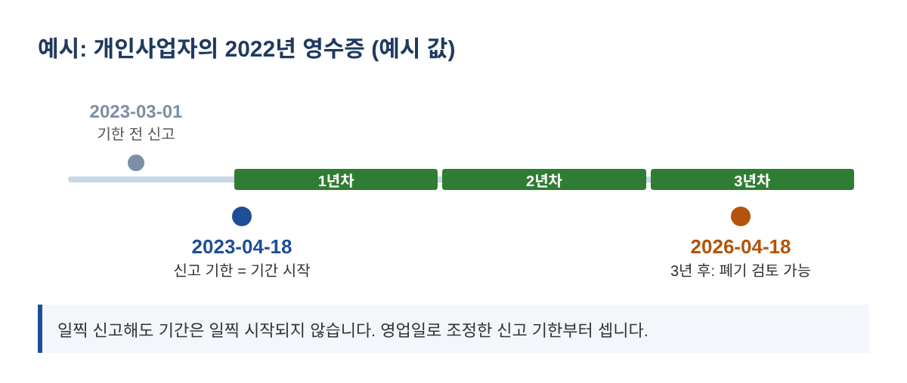
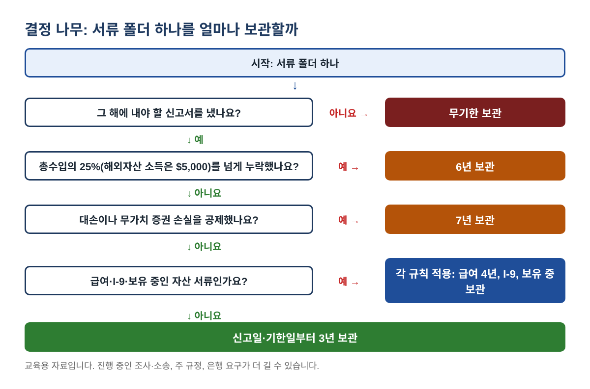
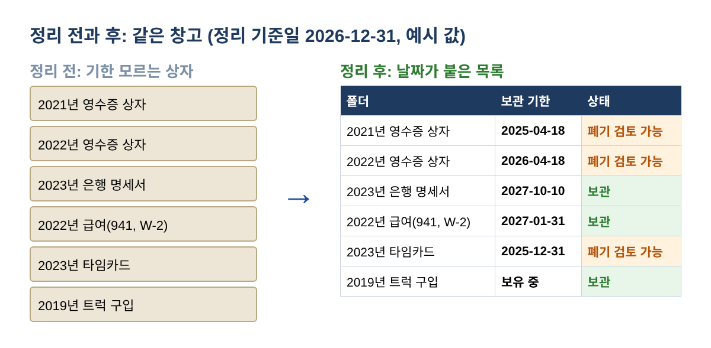

사업 서류, 언제 버려도 될까? 세금·급여 서류 보관 기간과 폐기 날짜 계산법 (2026)
연말이 되면 창고나 사무실 구석에 쌓인 영수증 상자, 은행 명세서, 급여 서류가 눈에 들어옵니다. 2021년 상자는 이제 버려도 될까요? 그만둔 직원의 Form I-9, 오래된 타임카드, 2019년에 산 트럭 서류는요? 너무 일찍 버리면 IRS가 그 해를 물어볼 때 보여 줄 근거가 없고, 전부 끝까지 쌓아 두면 공간도 차지하고 SSN·계좌번호가 적힌 종이가 계속 남아 있게 됩니다. 이 글은 연방 규정을 "몇 년 몇 월 며칠까지"라는 날짜로 바꾸는 방법을, 엑셀이나 구글 시트에 그대로 넣을 수 있는 수식과 함께 정리했습니다.
왜 '날짜'가 정해져 있을까
IRS가 어떤 해의 세금을 추가로 부과할 수 있는 기간은 정해져 있습니다. 이를 부과 제척기간(period of limitations)이라고 하며, IRS는 이 기간이 끝날 때까지 신고 근거 서류를 보관하라고 안내합니다. 대부분의 사업자에게 기본은 신고일로부터 3년입니다. 다만 몇 가지 상황에서는 더 길어지고, 급여·이민 관련 서류는 기준이 따로 있습니다. 어떤 규칙이 적용되는지, 언제부터 세는지만 알면 폐기 가능일은 간단한 계산입니다.
1단계: 서류 종류별 규칙 확인
먼저 상자와 폴더를 아래 종류로 나눕니다. 기간은 IRS, 미국 노동부(DOL), USCIS, FinCEN 자료 기준입니다(2026년 11월 확인).
| 서류 | 보관 기간 | 언제부터 |
|---|---|---|
| 수입·경비 기록(영수증, 인보이스, 은행·카드 명세서) | 3년 | 신고일 (기한 전에 냈다면 신고 기한일) |
| 환급 청구·수정 신고 근거 | 신고 후 3년과 납부 후 2년 중 늦은 날 | 원래 신고일 / 납부일 |
| 자산 기록(구입, 개량, 감가상각) | 보유하는 동안 + 3년 | 매각한 해의 신고서 |
| 급여세 기록(Form 941, 940, W-2, W-4, 납부 내역) | 최소 4년 | 납부 기한과 실제 납부일 중 늦은 날 |
| 근로기준법(FLSA) 급여 기록(임금, 근무시간 합계) | 3년 | 기록 날짜 |
| 타임카드, 시급표 | 2년 | 기록 날짜 |
| Form I-9 (취업 자격 확인서) | 입사 후 3년과 퇴사 후 1년 중 늦은 날 | 입사일 / 마지막 근무일 |
| FBAR(해외 금융계좌) 기록 | 5년 | 보고 연도 다음 해 4월 15일 |
| 신고한 세금 신고서 사본 | 계속 보관 (IRS 권고) | - |
2단계: 기간이 시작되는 날 찾기
가장 많이 틀리는 부분입니다. 신고 기한 전에 낸 신고서는 기한일에 낸 것으로 봅니다. 2022년 Schedule C를 2023년 3월 1일에 일찍 냈더라도 기간은 신고 기한부터 시작합니다. 그리고 기한일이 주말이나 법정 공휴일이면 다음 영업일로 넘어갑니다. 2023년 4월 15일은 토요일이었고 4월 17일(월)은 워싱턴 DC 해방기념일(Emancipation Day)이어서, 2022년 개인 신고 기한은 2023년 4월 18일이었습니다. 여기에 3년을 더하면 2026년 4월 18일입니다.

반대로 늦게 내거나 연장 신고를 했다면 실제로 낸 날부터 셉니다. 2023년분을 연장 후 2024년 10월 15일에 냈다면 폐기 검토는 4월이 아니라 2027년 10월 15일 이후입니다. 달력 연도 기준 신고 기한은 Form 1040(Schedule C 포함)·1120은 다음 해 4월 15일, Form 1120-S·1065는 3월 15일입니다.
급여는 한 해의 마지막 신고(4분기 Form 941) 기한이 다음 해 1월 31일입니다. 이 날짜(늦게 냈다면 실제 납부일)에 4년을 더합니다. 2022년 급여를 제때 냈다면 2027년 1월 31일 이후 폐기를 검토할 수 있습니다.
3단계: 특수 상황 확인
3년을 더하기 전에 아래 네 가지를 확인하세요. 해당되면 기간이 크게 늘어납니다.
- 신고서에 적은 총수입의 25%를 넘는 소득을 빠뜨렸다면 6년 보관합니다. 해외 금융자산에서 생긴 소득을 $5,000 넘게 빠뜨린 경우도 IRS는 6년으로 안내합니다.
- 무가치 증권 손실이나 대손(받지 못한 채권) 공제를 청구했다면 7년 보관합니다.
- 내야 할 신고서를 내지 않았거나 허위로 신고했다면 무기한 보관합니다.
- 아직 보유 중인 자산이나, 다음 해에도 쓰는 이월 공제의 근거라면 기간이 아직 시작되지 않았습니다.

4단계: 스프레드시트로 날짜 붙은 목록 만들기
상자나 디지털 폴더 하나에 한 줄씩 적습니다. 열은 A 이름, B 과세연도, C 실제 신고일(모르면 비워 둠), D 보관 연수, E 보관 기한, F 상태로 하고, H1 칸에 정리 기준일을 넣습니다. 2행에 아래 수식을 넣고 아래로 복사하세요.
- 1040·1120 신고 기한(보조 칸 G2): =WORKDAY(DATE(B2+1,4,15)-1,1) — 1120-S·1065는 4를 3으로 바꿉니다. 공휴일까지 정확히 맞추려면 세 번째 인수로 공휴일 목록을 넣으세요.
- 보관 기한(E2): =EDATE(MAX(G2,C2),12*D2) — MAX가 기한일과 실제 신고일 중 늦은 날을 고르므로 조기 신고가 자동으로 처리됩니다.
- 상태(F2): =IF($H$1>E2,"폐기 검토 가능","보관")
- 급여 줄: =EDATE(MAX(WORKDAY(DATE(B2+1,1,31)-1,1),C2),48) — 늦게 냈다면 C2에 납부일을 넣습니다.
- Form I-9 줄(J2 입사일, K2 마지막 근무일): =MAX(EDATE(J2,36),EDATE(K2,12))
구글 시트에서도 같은 함수가 됩니다. E열은 날짜 서식으로 바꿔 주세요. 정리 기준일을 2026년 12월 31일로 하면 목록은 이렇게 됩니다.
| 폴더 (예시 값) | 규칙 | 보관 기한 | 2026-12-31 기준 상태 |
|---|---|---|---|
| 2021년 영수증, 2022-03-02 신고 | 기한 2022-04-18부터 3년 | 2025-04-18 | 폐기 검토 가능 |
| 2023년 은행 명세서, 연장 후 2024-10-10 신고 | 신고일부터 3년 | 2027-10-10 | 보관 |
| 2022년 급여(941, W-2), 제때 납부 | 2023-01-31부터 4년 | 2027-01-31 | 보관 |
| 2023년 타임카드 | 2023-12-31부터 2년 | 2025-12-31 | 폐기 검토 가능 |
| Form I-9, 2021-03-01 입사, 2024-06-28 퇴사 | 입사+3년, 퇴사+1년 중 늦은 날 | 2025-06-28 | 폐기 검토 가능 |
| 2023년 대손 공제 근거 | 기한 2024-04-15부터 7년 | 2031-04-15 | 보관 |
| 2019년 구입, 보유 중인 트럭 | 보유하는 동안 | - | 보관 |
모든 값은 예시입니다. 무료 키트의 엑셀은 주말과 기한 공휴일까지 자동으로 계산합니다.

5단계: 안전하게 정리하기
'폐기 검토 가능'은 '반드시 버려야 함'이 아닙니다. 버리기 전에 그 해가 IRS 편지·세무조사·소송·보험 청구와 관련 있는지, 주 정부·은행·건물주·보험사가 더 긴 보관을 요구하는지, 아직 쓰는 자산이나 이월 공제의 근거인지 확인하세요. 그다음 SSN·계좌번호가 적힌 종이는 크로스컷 세단기나 파쇄 업체로 처리하고, 옛 컴퓨터·휴대폰은 완전히 지우고, 날짜·폴더·방법·이니셜을 적은 간단한 폐기 기록을 남겨 두세요.
자주 하는 실수
- 일찍 신고했는데 신고일부터 세는 경우. 기간은 기한일부터 시작하므로 몇 주 일찍 버리게 됩니다.
- 연장 신고를 잊는 경우. 10월에 냈다면 날짜가 6개월 늦춰집니다.
- 자산 서류를 3년 뒤 버리는 경우. 구입·개량 기록은 매각한 해로부터 3년까지 필요합니다.
- 급여 서류를 일반 영수증처럼 처리하는 경우. 급여세 기록은 최소 4년, 특례 병가·가족휴가와 직원 유지 세액공제(ERC) 급여 기록은 최소 6년입니다.
- 퇴사한 직원의 I-9를 너무 일찍 버리는 경우.
- 주 규정을 놓치는 경우. 주마다 기간이 따로 있을 수 있으니 확인하고 그만큼 더하세요.
자주 묻는 질문
모든 서류를 7년 보관하면 되나요?
7년은 대손·무가치 증권 공제에 대한 IRS 기간입니다. 많은 분이 편하게 "7년"으로 기억하는데, 대부분의 서류에는 넉넉하지만 기본 3년보다 길고, 자산 서류나 신고하지 않은 해에는 부족합니다.
종이 대신 스캔본만 보관해도 되나요?
전자 보관을 하는 사업체가 많습니다. 빠진 쪽 없이 잘 읽히게 스캔하고, 종이와 같은 기간 동안 보관하며, 최소 두 곳에 백업해 두세요.
이미 정리한 해에 대해 IRS 편지가 오면요?
은행, 카드사, 급여 대행사에서 옛 명세서 사본을 받을 수 있는 경우가 많습니다. 다만 시간이 걸리므로, 문제가 걸려 있는 해의 서류는 완전히 끝날 때까지 보관하는 것이 좋습니다.
한국에 은행 계좌가 있으면 더 챙길 것이 있나요?
FBAR를 낸다면 계좌 기록을 보고 연도 다음 해 4월 15일부터 5년 보관합니다. 보고 연도가 2020인 계좌라면 그 날짜는 2026년 4월 15일이었습니다.
연말 체크리스트
- ☐ 올해 신고를 마친 뒤로 정리 기준일을 정한다.
- ☐ 모든 상자·디지털 폴더를 과세연도·서류 종류와 함께 적는다.
- ☐ 실제 신고일, 연장 신고, 늦게 낸 급여세를 표시한다.
- ☐ 소득 누락·대손·미신고 같은 특수 상황을 표시한다.
- ☐ 세무조사·IRS 편지·소송·청구 관련 서류는 남긴다.
- ☐ 주 정부·은행·건물주·보험사 요구 기간을 확인한다.
- ☐ 안전하게 파쇄하고 폐기 기록을 남긴다.
이 글은 교육용 자료이며 세무·법률 자문이 아닙니다. 2026년 11월 기준 연방 일반 규정을 다룹니다. 주 정부, 은행, 보험사, 법원은 더 긴 보관을 요구할 수 있습니다. 세무조사·분쟁 중이거나 확실하지 않다면 서류를 버리지 말고 전문가와 상의하세요.
위 과정을 그대로 해 주는 사업 서류 보관 기간 플래너 2026은 아래 무료 키트 다운로드에서 가입 없이 무료로 받으실 수 있습니다(엑셀 + PDF 가이드).
출처
- IRS: How long should I keep records?
- IRS Topic No. 305, Recordkeeping
- IRS: Employment tax recordkeeping
- 미국 노동부: Fact Sheet #21, FLSA recordkeeping
- USCIS: Handbook for Employers M-274, 10.0 Retaining Form I-9
- FinCEN: Record keeping (FBAR)
무료 키트 다운로드
글에서 설명한 내용을 그대로 따라 할 수 있는 도구입니다. 가입 없이 바로 받으세요.
- 단계별 가이드 (PDF)Record_Retention_Guide_2026_EN_KR.pdf · 386 KB
- Excel 계산 도구 (.xlsx)Record_Retention_Planner_2026_EN_KR.xlsx · 40 KB
본인과 본인 사업에 무료로 쓰세요. 재판매·재배포는 하지 마세요. 일반 정보이며 세무·법률·회계 자문이 아닙니다. 숫자는 본인 자료로 꼭 확인하세요.